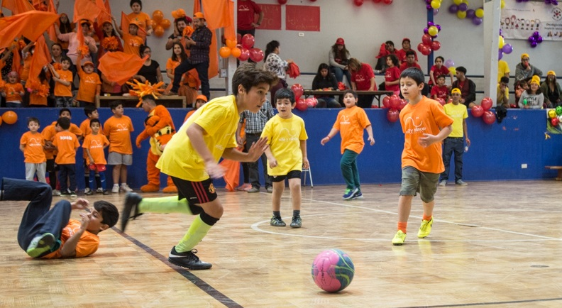

Noticias
XV Torneo Inter Hospitales de Futbolito y Porristas 2018
Con gran entusiasmo y una importante participación se llevó a cabo, el domingo 15 de abril, el XV Torneo Inter Hospitales de Futbolito y Porristas 2018, en el que participaron niños que padecen de cáncer y que son atendidos en los Hospitales Luis Calvo Mackenna, Exequiel González Cortés, San Borja Arriarán, San Juan de Dios, Sotero del Río y Gustavo Fricke. A dicha actividad que se realizó en dependencias del Estadio del Banco Central y organizada por la Fundación Niño y Cáncer, llegaron cerca de 460 personas entre niños, sus padres y personal de apoyo de los distintos recintos hospitalarios. El principal objetivo de esta actividad, es entregar a niños, jóvenes y sus familias una instancia recreativa; mostrarles que sufrir una enfermedad difícil como es el cáncer infantil y la leucemia, no es razón para dejar de ser optimistas, alegres y disfrutar los lindos momentos que la vida nos entrega, como es la posibilidad de jugar con jóvenes de su misma edad. Nuestro espíritu es promover una jornada de sana competencia, colaboración y fraternidad como otra forma de sanación del alma. Ver a las barras de los hospitales, alentar a sus equipos, compartir animadas conversaciones durante el desayuno, almuerzo, en la cancha, ver a los niños con sus familias disfrutar de este día, es un regalo y justifica plenamente todo el esfuerzo que implica la organización de esta actividad. El torneo del futbolito tuvo las categorías infantil y mayores de 15 años, las que con muy pocos diferencias de goles se decidieron los tres primeros lugares de los Hospitales participantes y su goleador destacado por categoría.
Montaña de la alegría 2017
Proyecto recreativo y psicoterapéutico que se realiza desde el año 2002. Se traduce en "Una Terapia para el Alma".
Se realizó como todos los años en Portillo del 21 al 25 de agosto y contó con la participación de 7 jóvenes chilenos, 2 ecuatorianos y 1 de España. Todos amputados de una extremidad inferior, como secuela de su enfermedad. El objetivo de este Programa es demostrar a los participantes, que su impedimento físico no los limita para plantearse y superar desafíos, tales como el aprender a esquiar y que con optimismo y fuerza lograrán todos los objetivos que se propongan en su vida. El coordinador responsable y voluntario de la FNyC es Patricio Morandé, instructor de ski, que también sufrió una amputación producto del cáncer siendo muy joven. Participó en las Olimpiadas para Discapacitados organizadas en Salt Lake City (EE.UU.) el año 2002, en la que obtuvo el puesto N°11. Fueron acompañados durante los 5 días que permanecieron en Portillo, por la Voluntaria de la FNyC y sonrisóloga Susana Alegría, Psicóloga. La Fundación Niño y Cáncer cubrió todos los gastos: alojamiento, alimentación, instructores de ski, traslados, equipos especiales y vestimenta adecuada (ropa térmica, antiparras, cascos, guantes, botas, entre otros).
Camping de los sueños 2016
Esta vigésima versión se realizó en el balneario "La Floresta" a 50 Km de Montevideo, Uruguay, del 14 al 19 de diciembre de 2015.
Participaron aproximadamente 70 niños con patologías oncológicas de: Argentina (Tucumán y Mendoza), Brasil (Puerto Alegre y San Pablo), Paragua (Asunción), Chile, Venezuela y Honduras.
La experiencia que viven los niños en este campamento es extraordinaria. Regresan con un espíritu renovado, compartir con niños de distintos países que tienen cáncer y leucemia los ayuda a comprender como deben enfrentar la enfermedad.
La Fundación como en años anteriores, financió: pasajes, seguros de viaje, ropa adecuada, entre otras cosas.
Los niños que viajaron representando a Chile en esta oportunidad fueron:
Matías Gonzalez del Hospital Roberto del Río
Yaresla Valenzuela del Hospital Sotero del Rio
Fabiola Angulo del Hospital San Borja Arriaran
Fueron acompañados por el EU Valeska Becker del Hospital Roberto del Rio.
A continuación se muestra un correo enviado por ella al regreso del viaje. (20 de diciembre de 2015):
Estimados:
Les escribo para contarles que llegamos sin novedad de vuelta del campamento por la vida de Uruguay, los niños fueron recogidos por sus padres en el aeropuerto.
Lo pasaron excelente, compartieron con niños de otros países hicieron amigos y disfrutaron de todas las actividades que planificó la fundación. Fue una experiencia enriquecedora en lo personal, y en mi caso, también en lo profesional.
Desde ya les agradezco la oportunidad de participar y quisiera expresarles todo mi apoyo y disposición para participar en la planificación para el próximo año.
Saludos cordiales